This method visualizes item characteristic curves (ICCs), item score curves, or the test characteristic curve (TCC) using the ggplot2 package. ICCs or item score curves can be plotted for one or more selected items, while the TCC is plotted for the entire test form.
Usage
# S3 method for class 'traceline'
plot(
x,
item.loc = NULL,
score.curve = FALSE,
overlap = FALSE,
layout.col = 2,
xlab.text,
ylab.text,
main.text,
lab.size = 15,
main.size = 15,
axis.size = 15,
line.color,
line.size = 1,
strip.size = 12,
...
)Arguments
- x
x An object of class
tracelineobtained fromtraceline().- item.loc
A numeric vector specifying the position(s) of the item(s) to plot. If
NULL(default), the test characteristic curve (TCC) for the entire test form is plotted.- score.curve
Logical. If
TRUE, plots the item score curve, defined as the weighted sum of category probabilities across score categories, in a panel.If
FALSE, plots item characteristic curves (ICCs) for all score categories, either in separate panels or in a single panel depending on theoverlapsetting.For dichotomous items, the item score curve is equivalent to the ICC for score category 1. Ignored when
item.loc = NULL. Default isFALSE.- overlap
Logical. Determines how multiple curves are displayed when plotting ICCs or item score curves.
If
TRUE, curves are overlaid in a single panel using different colors. IfFALSE, each curve is drawn in a separate panel - either one panel per item or per score category, depending on the setting ofscore.curve.- layout.col
An integer value indicating the number of columns in the plot when displaying multiple panels. Used only when
overlap = FALSE. Default is 2.- xlab.text, ylab.text
Character strings specifying the labels for the x and y axes, respectively.
- main.text
Character string specifying the overall title of the plot.
- lab.size
Numeric value specifying the font size of axis titles. Default is 15.
- main.size
Numeric value specifying the font size of the plot title. Default is 15.
- axis.size
Numeric value specifying the font size of axis tick labels. Default is 15.
- line.color
A character string specifying the color of the plot lines. See http://www.cookbook-r.com/Graphs/Colors_(ggplot2)/ for available color names.
- line.size
Numeric value specifying the thickness of plot lines. Default is 1.
- strip.size
Numeric. Font size of facet labels when ICCs are plotted.
- ...
Additional arguments passed to
ggplot2::geom_line()from the ggplot2 package.
Value
This method displays item characteristic curves (ICCs), item score curves, or the test characteristic curve (TCC), depending on the specified arguments.
Details
All plots are generated using the ggplot2 package.
If item.loc = NULL, the test characteristic curve (TCC) for the entire test
form is plotted. If item.loc is specified, it should be a vector of
positive integers indicating the position(s) of the items to be plotted.
For example, if the test form includes ten items and you wish to plot the
score curves of the 1st, 2nd, and 3rd items, set item.loc = 1:3.
Author
Hwanggyu Lim hglim83@gmail.com
Examples
## Example using a "-prm.txt" file exported from flexMIRT
# Import the "-prm.txt" output file from flexMIRT
flex_prm <- system.file("extdata", "flexmirt_sample-prm.txt", package = "irtQ")
# Read the item parameters and convert them to item metadata
test_flex <- bring.flexmirt(file = flex_prm, "par")$Group1$full_df
# Define a sequence of theta values
theta <- seq(-3, 3, 0.1)
# Compute item category probabilities and item/test characteristic functions
x <- traceline(x = test_flex, theta, D = 1)
# Plot the test characteristic curve (TCC) for the full test form
plot(x, item.loc = NULL)
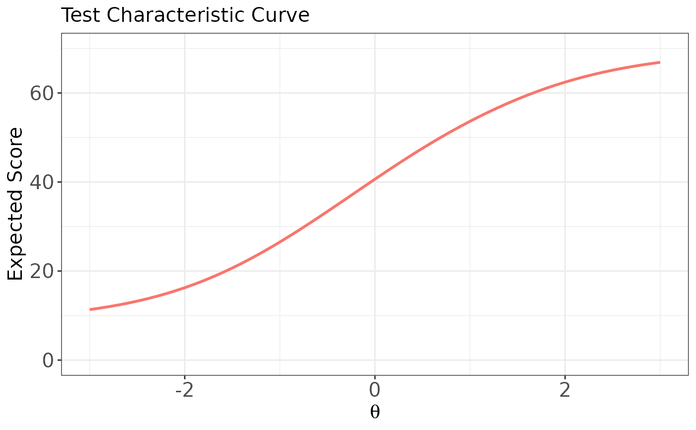
# \donttest{
# Plot ICCs for the first item (dichotomous),
# with a separate panel for each score category
plot(x, item.loc = 1, score.curve = FALSE, layout.col = 2)
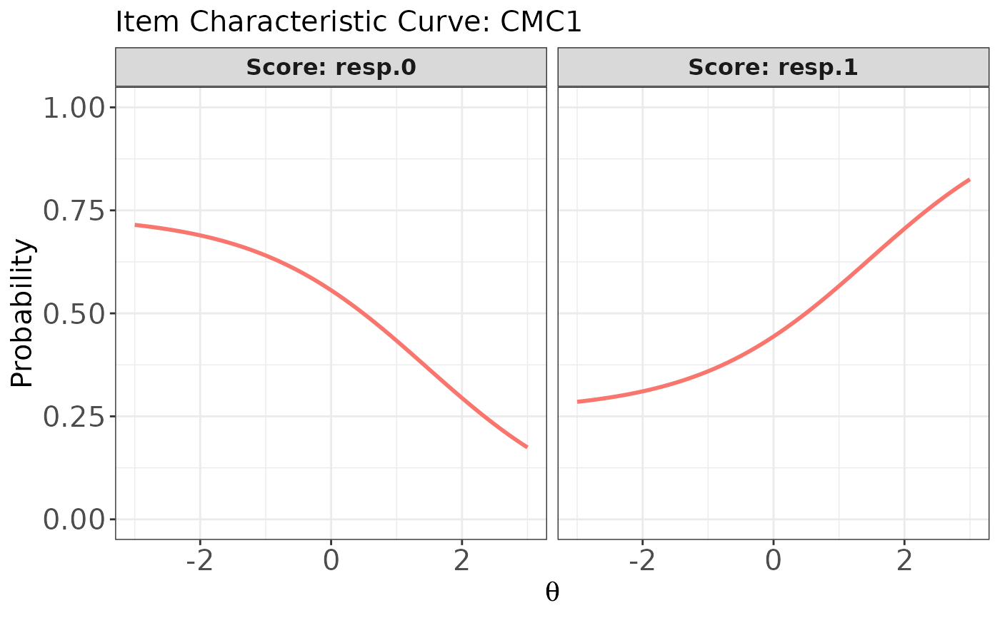
# Plot ICCs for the first item in a single panel
# (all score categories overlaid)
plot(x, item.loc = 1, score.curve = FALSE, overlap = TRUE)
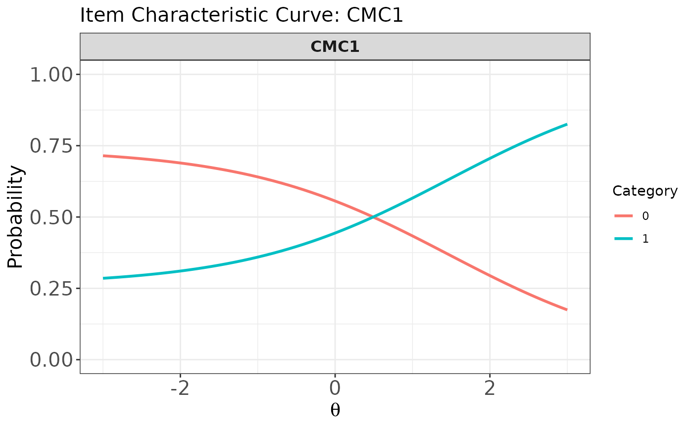
# Plot ICCs for multiple items (both dichotomous and polytomous),
# with each item's ICCs shown in a single panel
plot(x, item.loc = c(1:3, 53:55), score.curve = FALSE, overlap = TRUE)
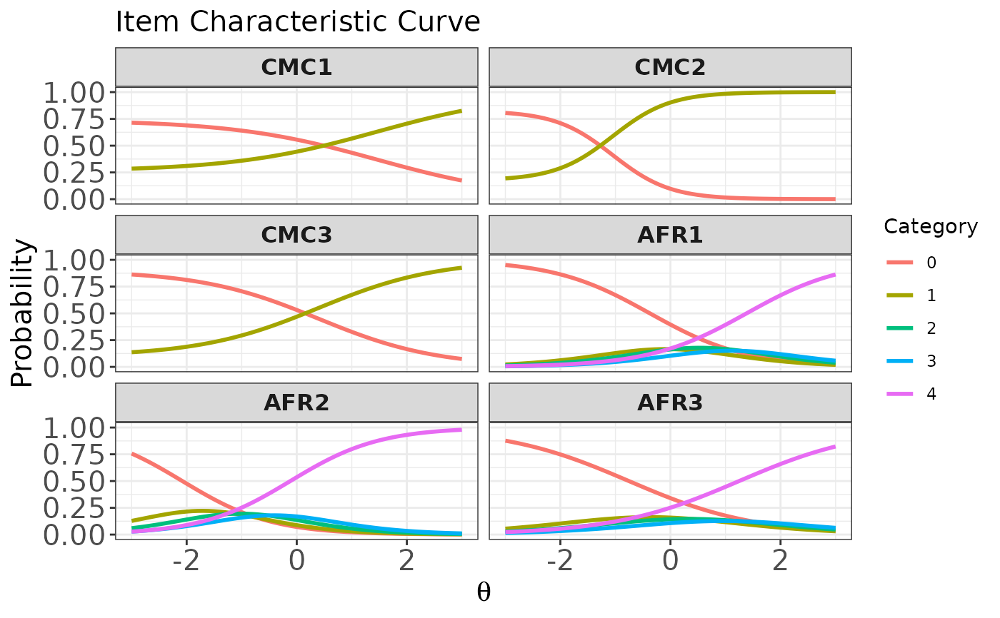
# Plot the item score curve for the first item (dichotomous)
plot(x, item.loc = 1, score.curve = TRUE)
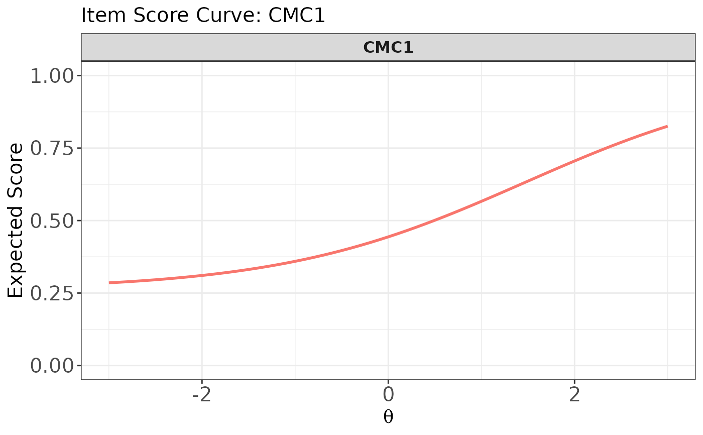
# Plot item score curves for the first six dichotomous items
# using multiple panels
plot(x, item.loc = 1:6, score.curve = TRUE, overlap = FALSE)
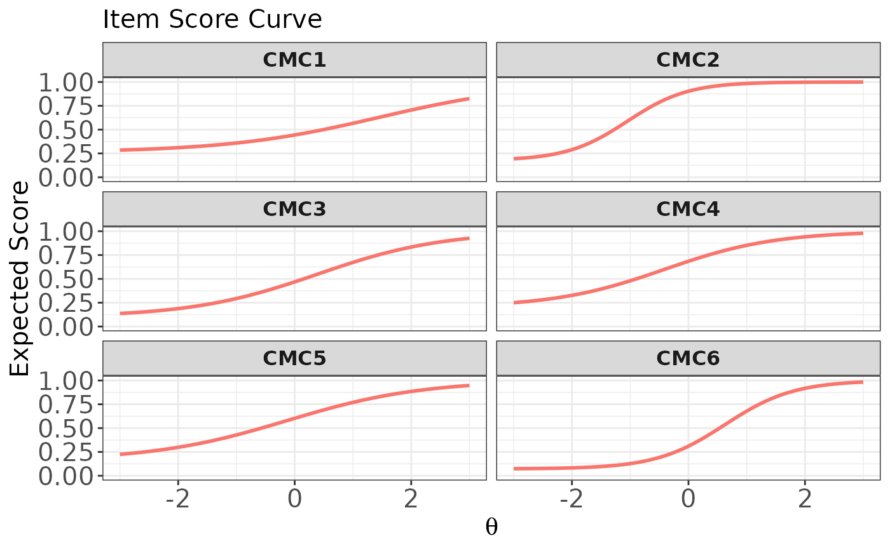
# Plot item score curves for the first six dichotomous items
# overlaid in a single panel
plot(x, item.loc = 1:6, score.curve = TRUE, overlap = TRUE)
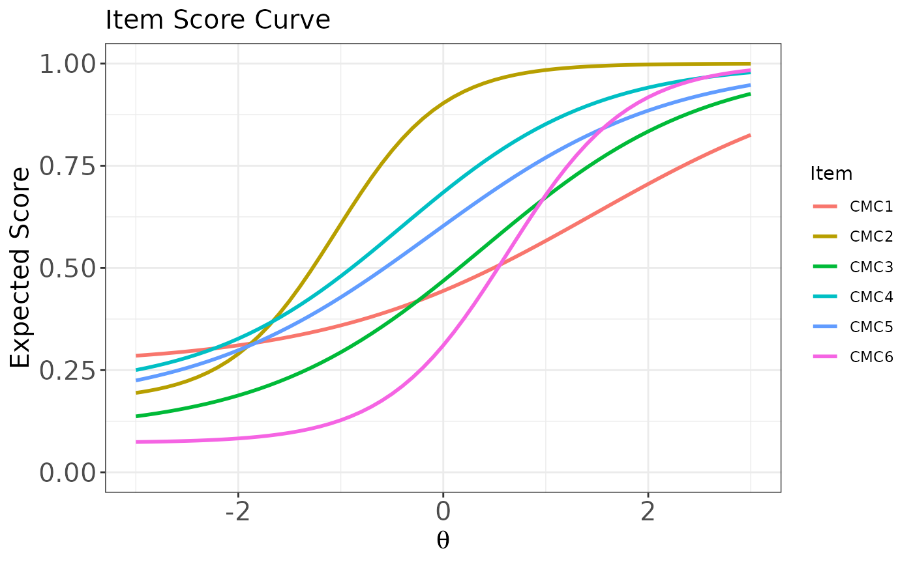
# Plot ICCs for the last item (polytomous),
# with each score category in a separate panel
plot(x, item.loc = 55, score.curve = FALSE, layout.col = 2)
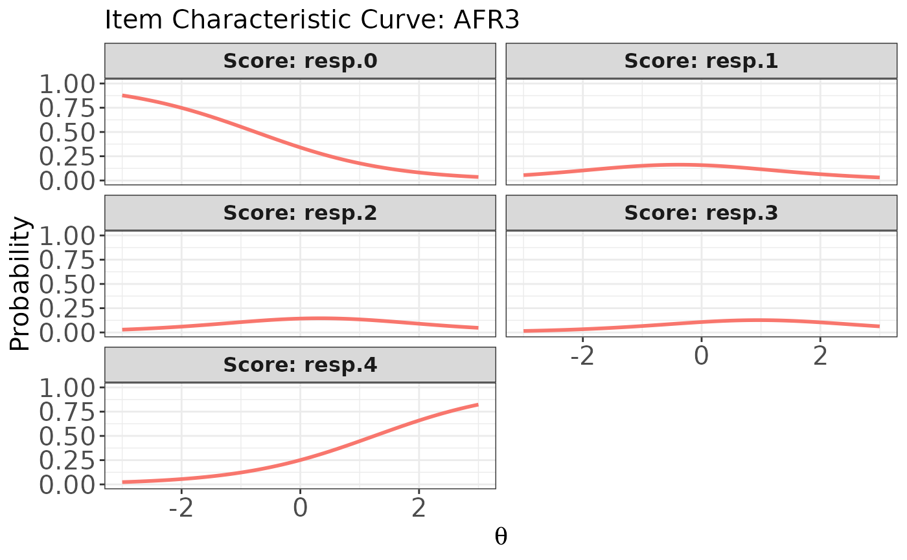
# Plot the item score curve for the last item (polytomous)
plot(x, item.loc = 55, score.curve = TRUE)
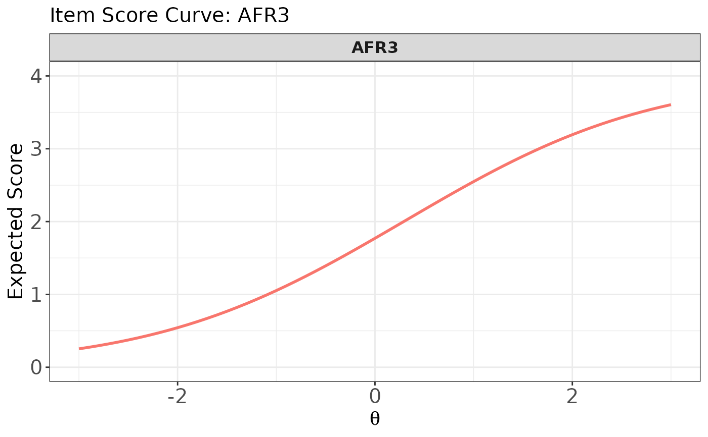
# Plot item score curves for the last three polytomous items
# using multiple panels
plot(x, item.loc = 53:55, score.curve = TRUE, overlap = FALSE)
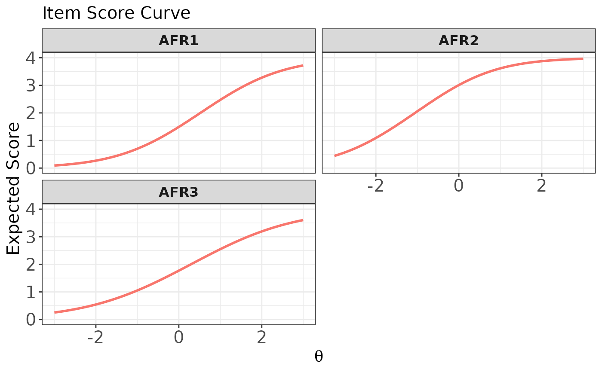
# Plot item score curves for the last three polytomous items
# overlaid in a single panel
plot(x, item.loc = 53:55, score.curve = TRUE, overlap = TRUE)
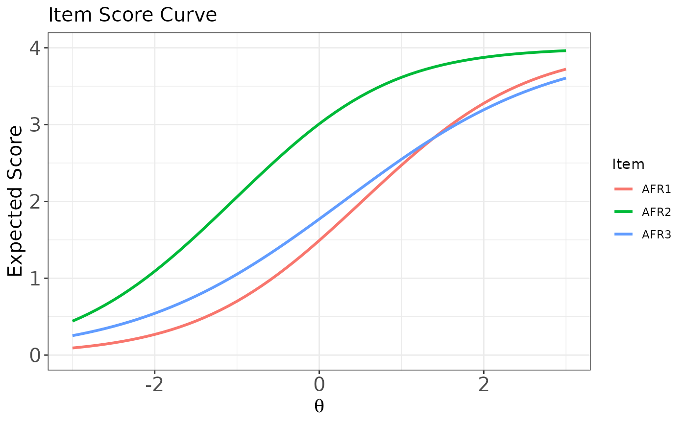
# }